# Broadcasting
自动扩展维度语法糖
# 关键点
- A 和 B 张量做 broadcasting，如果 B 前面缺失一个维度，则自动在前面插入一个维度
- 插入的维度大小为 1，接下来会自动将其维度大小为 1 的维度扩张到和 A 张量相同位置维度一样的大小
- 例子：Bias [32, 1, 1] -> [1, 32, 1, 1] -> [4, 32, 14, 14]
所以 broadcasting 的本质就是 unsqueeze + expand
# 案例
for actual demanding
- [class, students, scores]
- Add bias for every students: +5 score
- [4, 32, 8] + [4, 32, 8]
- [4, 32, 8] + [5.0]
boardcasting 会自动完成：[5.0].unsqueeze (0).unsqueeze (0).expand (A) 这个操作
# 适用情况
Match from Last dim!
- If current dim = 1, expand to same
- If either has no dim, insert one dim and expand to same
- otherwise, NOT broadcasting-able
例如：[4, 32, 14, 14] + [2, 32, 14, 14] 不可以进行，因为
- Dim 0 has dim, can NOT insert and expand to same
- Dim 0 has distinct dim, NOT size 1
- So NOT broadcasting-able
# 理解
从最后一个维度开始匹配 match from last dim
因为人们相信高维的东西都是相同的，只有低维的才会针对不同的情况有不同的数据
例如对于 [4, 3, 32, 32] +
- [32, 32]，表示在所有照片，所有通道上都叠加一个相同的 Map
- [3, 1, 1]，表示在所有照片，不同通道上叠加设定的值，例如 R 通道上都加 0.5，G 通道上都加 0.4，B 通道上都加 0.3
- [1]，表示在所有照片，所有通道，所有像素点上都叠加一个相同的值
# 合并与分割
# cat
例如 a 是 [class1-4, students, scores]，b 是 [class5-9, students, scores]
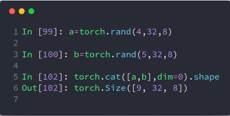
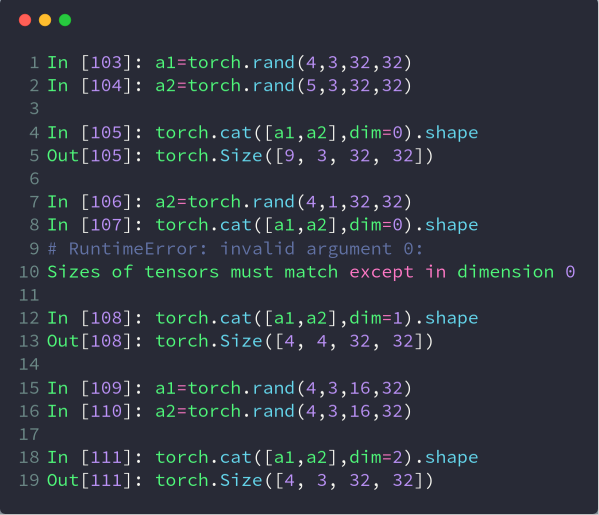
# stack
stack 和 cat 的区别是 stack 会创建一个新的维度
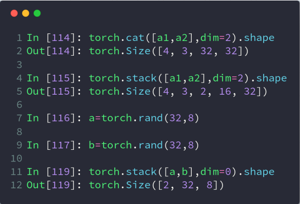
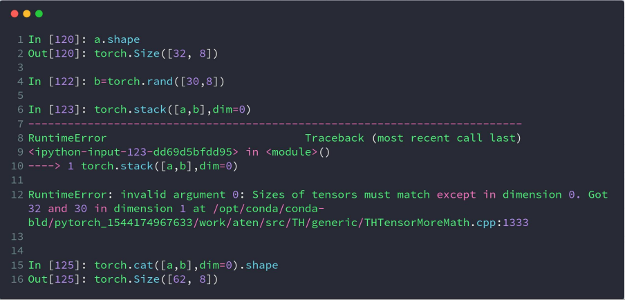
# split
按长度进行拆分，用 List 作为参数的话，可以指定拆分后的张量在指定维度的长度，不用 List 的话就表示根据参数进行均分
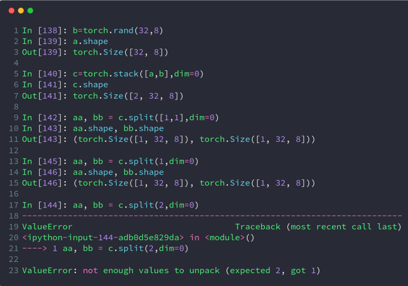
# chunk
按数量进行拆分，上面报错的例子，如果用 chunk 就不会报错，因为 chunk 里面的参数 2 指定了要拆分成两个块，而 split 里面的 2 指定了用长度为 2 进行拆分，而维度 0 一共就 2 个，所以用 split 指定 2 拆分后，就只能得到一个张量，不能用 aa, bb 两个张量进行接收，而用 chunk 就不会有这个问题
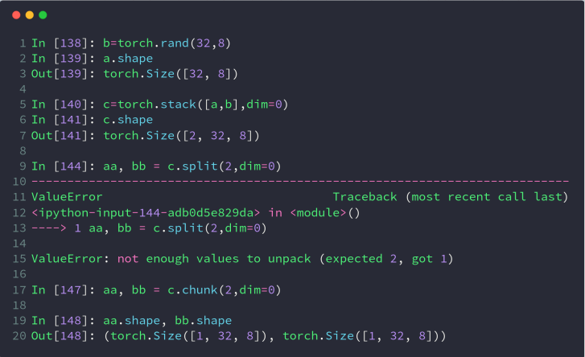
# 数学运算
# 加减乘除
这里就用到了前面所讲的 broadcasting
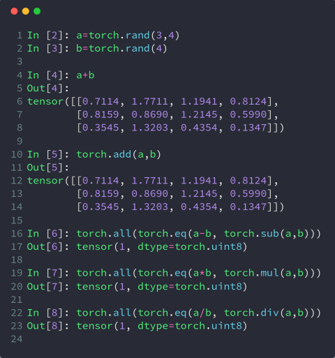
# 矩阵乘法
有三种方式
Torch.mm
- 只适用于二维张量
Torch.matmul
@
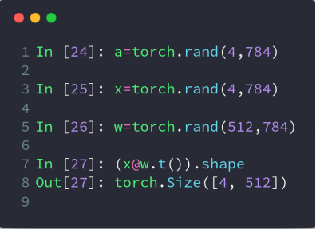
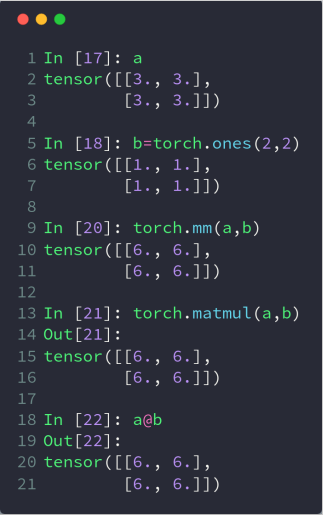
高维矩阵乘法实际上也是对最后两维进行矩阵乘法运算，本质就是支持多个矩阵对并行相乘
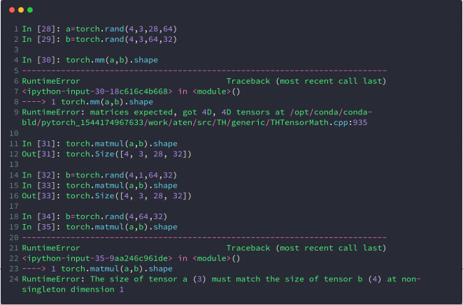
注意，broadcasting 也在其中发挥了作用
# 次方运算
log 运算默认以 e 为底，使用 log2 或 log10 进行其他底数的运算
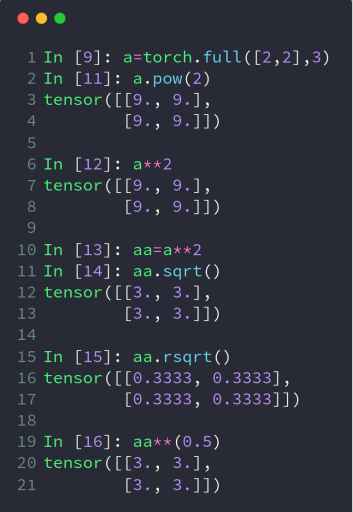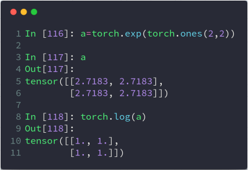
# 取近似运算
floor 往下走，ceil 往上走，trunc 取整数部分，frac 取小数部分，round 四舍五入
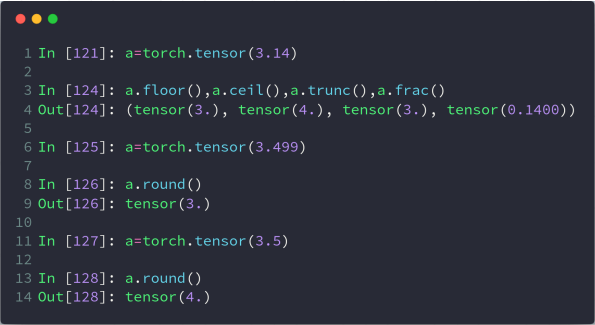
# 裁剪运算
一个参数表示小于设定参数的变为设定参数，两个参数表示（min，max），不在这个区间的设置为参数值，如下
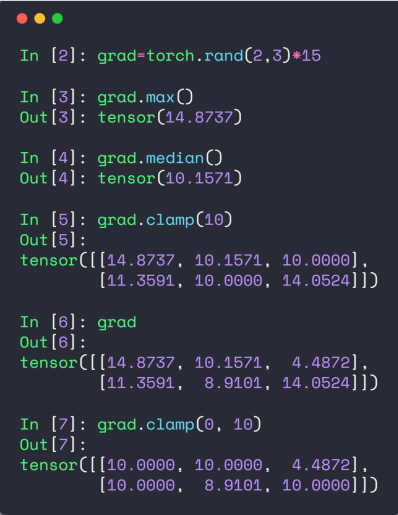
# 属性统计
# 范数
# vector norm vs. matrix norm
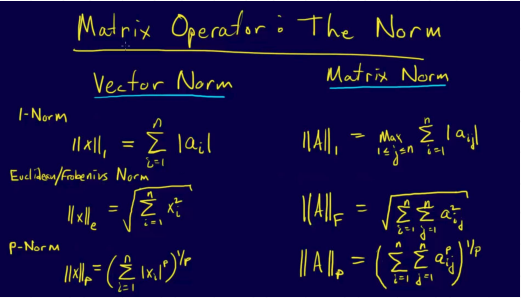
# norm 运算
对哪个维度计算范式，就会消掉哪个维度哦
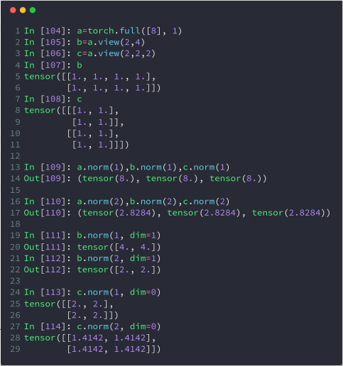
# min / max / sum / mean / prod
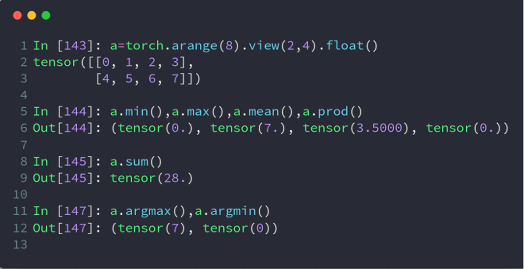
# argmin / argmax
注意，它会默认把所有维度都打平，如果不想被打平，需要指定 dim
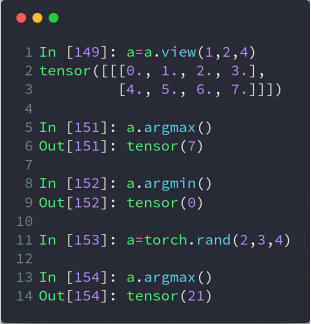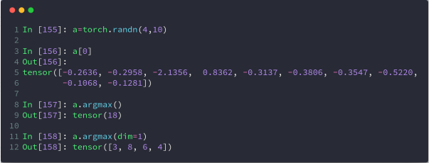
# dim 和 keepdim
正常情况下，在哪个维度 dim 运算，就会消掉哪个维度。keepdim 设置 true 可以保证 dim 不被消掉
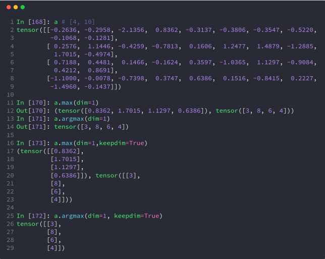
# topk 和 kthvalue
topk 比 max 返回更多的数据
kthvalue 返回的是第 k 小的数和索引
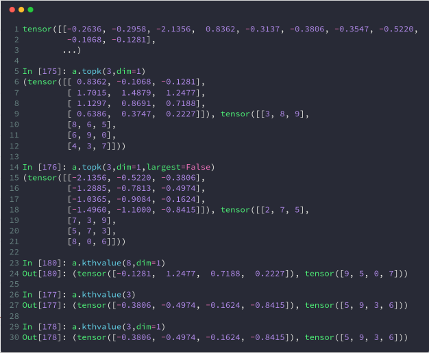
# >, >=, <, <=, !=, ==
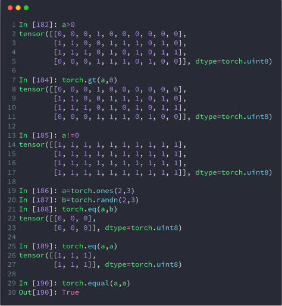
# 高阶操作
# where
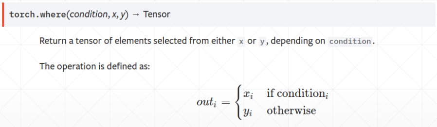
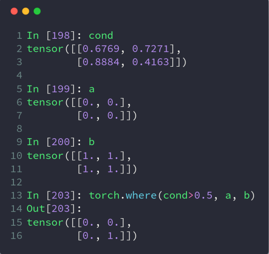
where 可以方便的将数据放到 GPU 上进行并行处理
# gather
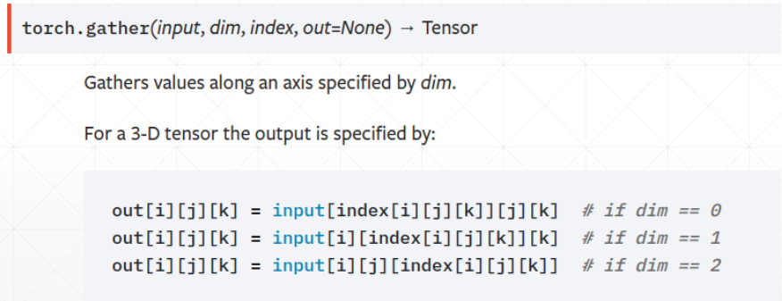
简单来说就是查表操作，比如有 [dog, cat, whale] 标签表，因为 PyTorch 里不能用字符串，所以预测我们得到结果张量为 [1, 0, 1, 2]，如果我们想根据索引查到对应的 Label，即 [cat, dog, cat, whale] 这样的结果，gather 方法就可以帮我们完成这件事
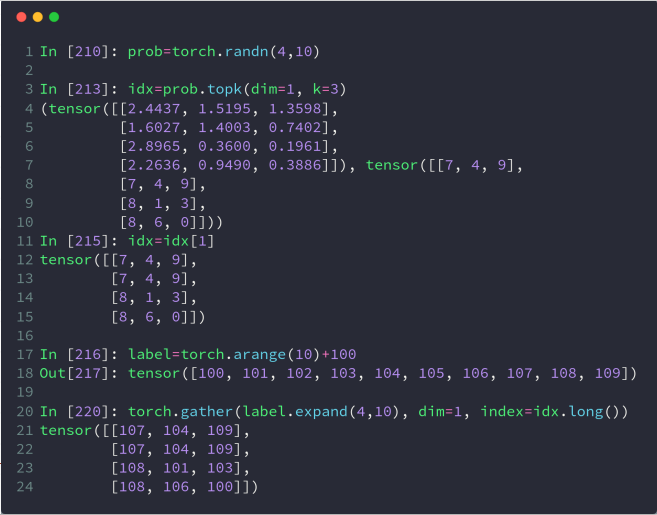